Too Many Cooks. Corporation — Pionniers du non-sens (depuis 2020)
Introduction
Bienvenue chez Too Many Cooks. Corporation
Pionniers du non-sens depuis 2020
Découvrez nos œuvres maison, fruits d’un chaos parfaitement maîtrisé
Nos créations

Notre histoire
üå±2020 ‚Äì Fondation
Naissance de TMC Corp. Un simple week-end qui dérape devient la genèse d’une organisation appelée à transformer l’ordinaire en chaos organisé.
üò∑2021 ‚Äì Pause forc√©e
Une année marquée par le Covid. Les opérations se poursuivent à distance, avec des innovations discutables comme l’apéro stratégique en visioconférence.
üìà2022/2023 ‚Äì Expansion
La Corpo reprend son développement. Les brainstormings deviennent incontrôlables, mais posent les bases d’une croissance assumée et démesurée.
üé¨2024 ‚Äì Too Many Cooks. Studios
Création du Too Many Cooks. Studios, une branche dédiée au cinéma… sans films. Production d’affiches, fausses campagnes et site officiel : le succès est total, du moins selon nos propres chiffres.
üßò2025 ‚Äì Too Many Cooks. Institute
Lancement du Too Many Cooks. Institute, un centre de bien-être unique, où chaque soin est conçu pour relaxer… ou déstabiliser. Nouvelle étape dans la diversification stratégique de la Corpo.
üîÆ2026 ‚Äì Notre avenir
Un projet international est en cours de préparation. Les détails restent confidentiels, classés au plus haut niveau de sécurité interne.
üöÄ2050 ‚Äì Conqu√™te de l‚Äôunivers
Selon les plans de notre CEO Mimi, TMC Corp. s’étendra au-delà des frontières terrestres. Objectif : devenir la première multinationale intergalactique du divertissement et du bien-être.
Direction
Founder and Chief Executive Officer
Chief Product and Innovation Officer
Chief People and Happiness Officer
Chief Financial and Control Officer
Chief Information and Security Officer
Infos et contact
Too Many Cooks. Corporation transforme l’ordinaire en expériences orchestrées où l’improbable devient une tradition.
Aujourd’hui, elle conçoit des aventures toujours plus absurdes — entre fiction, immersion et chaos organisé.
Le tout garanti inoubliable… mais jamais remboursable.
Plus de détails et nous contacter